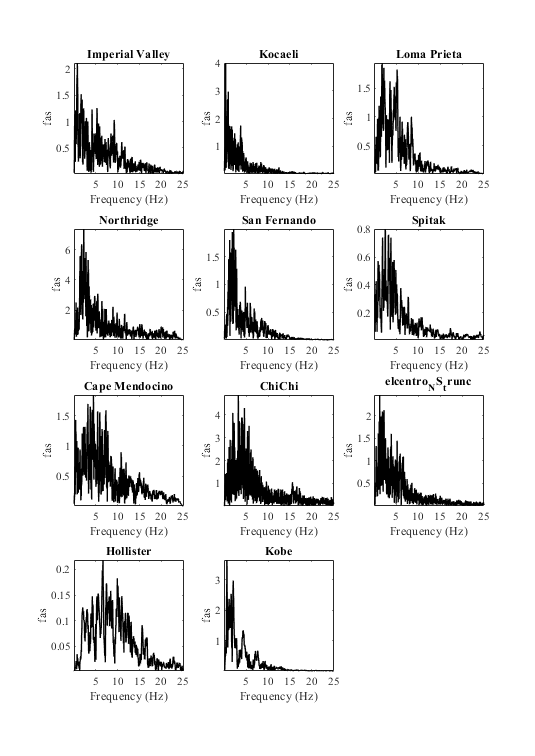

example Fourier spectra
Generate the Fourier spectra of an earthquake suite using OpenSeismoMatlab
Contents
Input
earthquake motions
eqmotions={'Imperial Valley'; % Imperial valley 1979
'Kocaeli';
'Loma Prieta';
'Northridge';
'San Fernando';
'Spitak';
'Cape Mendocino';
'ChiChi';
'elcentro_NS_trunc'; % Imperial valley 1940
'Hollister';
'Kobe'};
Switch
sw='fas';
Extract fourier spectra
Initialize cell of Fourier spectra
Fourier=cell(numel(eqmotions),1); % Calculation of Fourier spectra for i=1:numel(eqmotions) % earthquake data=load([eqmotions{i},'.dat']); t=data(:,1); dt=t(2)-t(1); xgtt=data(:,2); S=OpenSeismoMatlab(dt,xgtt,sw); Fourier{i}=[S.freq,S.FAS]; end
Output
Plot Fourier amplitude
Fig1 = figure('units', 'centimeters', 'Position', [0,0, 20/sqrt(2), 20]); % Scan all subplots for i=1:numel(eqmotions) subplot(4,3,i) plot(Fourier{i}(:,1),Fourier{i}(:,2),'k','LineWidth',1); set(gca,'FontName','Times New Roman') title(eqmotions{i},'FontName','Times New Roman') ylabel('fas','FontName','Times New Roman') xlabel('Frequency (Hz)','FontName','Times New Roman') axis tight end drawnow; pause(0.1)
Copyright
Copyright (c) 2018-2023 by George Papazafeiropoulos
- Major, Infrastructure Engineer, Hellenic Air Force
- Civil Engineer, M.Sc., Ph.D.
- Email: gpapazafeiropoulos@yahoo.gr